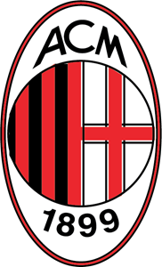

Dit is Real Madrid CF, het is de club met de meeste kampioenschappen ooit in de Champions League, het ligt in Madrid, Spanje. Hieronder staat nog meer informatie over deze ploeg.
Dit is Real Madrid CF, het is de club met de meeste kampioenschappen ooit in de Champions League, het ligt in Madrid, Spanje. Hieronder staat nog meer informatie over deze ploeg.
- Aantal Kampioenschappen: 13
- Aantal Punten Aller Tijden: 561
- Win Percentage: 60%
- Gemiddeld Aantal Punten Per Wedstrijd: 1.98
- Punten in 2021/22: 15 (Leider van poule)
- Door naar achtste finale 2021/22? Ja
- Doelsaldo Aller Tijden: 287
 Dit is AC Milan, het is de club met de op een na meeste kampioenschappen ooit in de Champions League, het ligt in Milaan, Italië. Hieronder staat nog meer informatie over deze ploeg.
- Aantal Kampioenschappen: 7
- Aantal Punten Aller Tijden: 272
- Win Percentage: 44%
- Gemiddeld Aantal Punten Per Wedstrijd: 1.60
- Punten in 2021/22: 4 (Laatste in poule)
- Door naar achtste finale 2021/22? Nee
- Doelsaldo Aller Tijden: 69
 Dit is Bayern München, het is de club dat 3e ligt qua meeste kampioenschappen ooit in de Champions League, het ligt in München, Duitsland. Hieronder staat nog meer informatie over deze ploeg.
Dit is Bayern München, het is de club dat 3e ligt qua meeste kampioenschappen ooit in de Champions League, het ligt in München, Duitsland. Hieronder staat nog meer informatie over deze ploeg.
- Aantal Kampioenschappen: 6
- Aantal Punten Aller Tijden: 522
- Win Percentage: 58%
- Gemiddeld Aantal Punten Per Wedstrijd: 1.96
- Punten in 2021/22: 18 (Leider van poule)
- Door naar achtste finale 2021/22? Ja
- Doelsaldo Aller Tijden: 274
 Dit is Liverpool, het is de club dat 4e ligt qua meeste kampioenschappen ooit in de Champions League, het ligt in Liverpool, Verenigd Koninkrijk. Hieronder staat nog meer informatie over deze ploeg.
Dit is Liverpool, het is de club dat 4e ligt qua meeste kampioenschappen ooit in de Champions League, het ligt in Liverpool, Verenigd Koninkrijk. Hieronder staat nog meer informatie over deze ploeg.
- Aantal Kampioenschappen: 6
- Aantal Punten Aller Tijden: 244
- Win Percentage: 51%
- Gemiddeld Aantal Punten Per Wedstrijd: 1.78
- Punten in 2021/22: 18 (Leider van poule)
- Door naar achtste finale 2021/22? Ja
- Doelsaldo Aller Tijden: 105